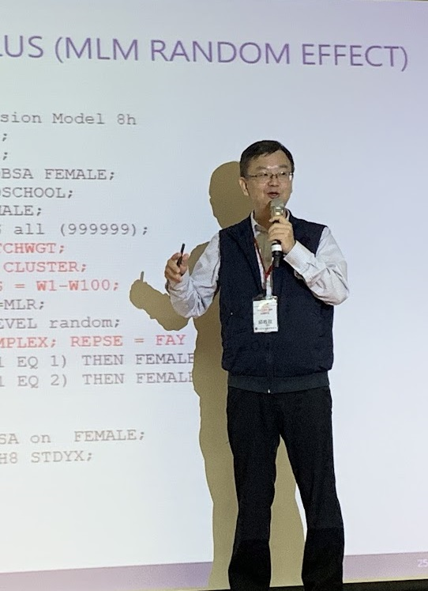

Psychometrics · Research · Books
邱皓政
Hawjeng Chiou, Ph.D.
中央研究院人文社會科學研究中心（另開分頁） 合聘研究員
Joint Research Fellows, Research Center for Humanities and Social Sciences (RCHSS), Academia Sinica
國立臺灣師範大學企業管理學系 特聘教授
教育心理與輔導學系 合聘教授
研究與教學以心理計量和量化方法為主。透過專書、課程與工作坊，說明統計模型的原理、使用條件與實際分析，讓研究者能把方法用在自己的問題上。
心理計量統計建模量化研究專書寫作
RESEARCH & TEACHINGNTNU

學術背景南加州大學 心理計量學博士University of Southern California
研究方法SEM · Multilevel · Mixture · Bayes測量、層次、異質性與縱貫分析
專書寫作統計原理與模型應用雙葉書廊・五南圖書出版
Books & prefaces
近期專書
專書寫作是我教學工作的一部分。從統計與量化研究的基礎，到結構方程模式、多層次分析、潛在異質性與貝氏統計，我希望把模型背後的想法與分析步驟說清楚。各書的序言，也記錄了寫作緣起與對研究方法的思考。


依版本出版年排列；最新印刷與版次分列。序言保留作者原文。
心理計量與統計方法
Psychometrics & statistical modeling結構方程模式、多層次分析、量表與測驗。從理論構念到模型估計，關注測量與推論的依據。
發展軌跡與潛在異質性
Longitudinal & mixture modeling縱貫資料、潛在成長、潛在轉移與混合模式。理解個體如何改變，也辨識群體之間的差異。
教育與兒童發展
Education & child development以教育與發展資料，研究認知、語言、動作、閱讀與學習，連結方法與實際問題。
人力資源與組織行為
Human resources & organizational behavior關注工作、職涯與組織，也將量化方法應用於校務研究、教育評估與管理議題。
Recent publications
近期研究
2025–2026 年精選期刊論文。
2026
Bidirectional associations between smart device use and body mass index among children aged 3 to 5 years: a longitudinal study
International Journal of Behavioral Nutrition and Physical Activity, 23, 18
使用隨機截距交叉延宕模型，檢視 3 至 5 歲幼兒的智慧裝置使用與 BMI，以及親子互動和性別的關聯。
2025
潛在異質性的變與不變：隨機截距潛在轉移模型的分類校正與輔助變數分析之蒙地卡羅模擬與實徵研究
調查研究—方法與應用，55，1–52
透過模擬與 KIT 父職參與資料，探討隨機截距、分類誤差校正與輔助變數的估計策略。
2025
Insights from normalized developmental rates across diverse domains in early childhood: a National Longitudinal Cohort
Acta Psychologica, 260, 105730
以臺灣幼兒發展調查資料與 Rasch 分析，比較不同年齡的認知、語言與動作發展速率。
2025
閱讀論文（另開分頁）Academic background
學術歷程
現任
中央研究院人文社會科學研究中心（另開分頁） · 合聘研究員
Joint Research Fellows, Research Center for Humanities and Social Sciences (RCHSS), Academia Sinica
2022.01–迄今
國立臺灣師範大學企業管理學系 · 特聘教授
2010.08–2022.01
國立臺灣師範大學企業管理學系 · 副教授／教授
2007.08–2010.07
國立中央大學企業管理學系 · 副教授
1992.08–1995.08
美國南加州大學 · 心理計量學博士
Ph.D. in Psychometrics, University of Southern California